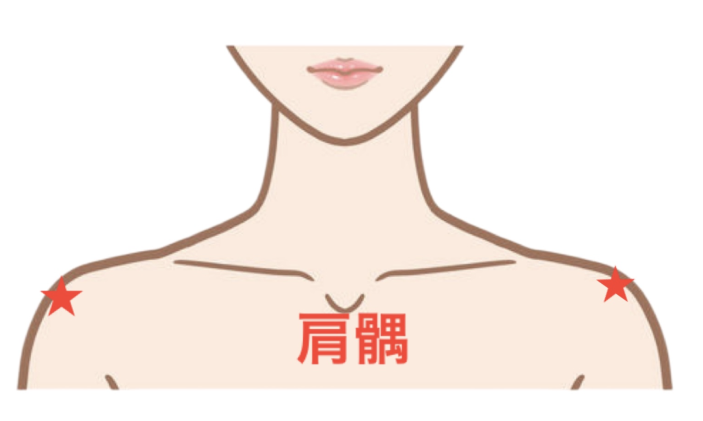

アトピー性眼症の鍼灸
アトピー性皮膚炎に伴う眼疾患の総称です。眼科・皮膚科での治療を最優先に、こすらない予防と安定期のツボ・体調ケアを支えます。
まず知っておきたい要点と改善の流れ
アトピー性皮膚炎、特に顔面に強い湿疹がある10〜30代に多く合併する眼疾患の総称で、眼瞼炎・角結膜炎・円錐角膜・アトピー性白内障・網膜剥離などが含まれます。皮膚バリア機能の低下や免疫異常、アレルゲン刺激による強いかゆみから、目の周囲を長期間にわたり強くこする・叩く・引っかくといった機械的刺激が加わることが、深刻な視力障害や網膜剥離を引き起こす大きな要因となります。（公式解説）
このようなお悩みはありませんか？
- ✓顔面やまぶた周囲のアトピー症状とかゆみが強い
- ✓目の充血やまぶたの腫れ、赤み・ごわつきがある
- ✓視界のかすみや歪み、飛蚊症・光視症が気になっている
- ✓目をこする癖がやめられず合併症が心配である
当院の施術アプローチ・改善の流れ
なぜ鍼灸で改善へ向かうのか？（作用機序の図解）
アトピー性眼症に対する鍼灸は、後頸部〜眼周囲の微小循環と毛様体筋・自律神経調整機序を通じて、お体本来の回復力を引き出します。

眼球周囲の危険な深刺しを避け、風池・天柱・合谷・太衝など安全な経穴へ繊細に施術します。
PC・スマホ作業や緊張で固まった首深層筋と眼輪筋周囲の血流を促し、重だるさを軽減します。
交感神経優位による目の乾き・ピント調節疲労を鎮め、涙液分泌とリラックス反応を助けます。
眼科の点眼・定期検査を最優先としつつ、日々の眼精疲労や頭痛・肩こりの連鎖を整えます。
院長YouTube解説・関連動画
アトピー性眼症はアトピー性皮膚炎に合わせて発症する目の合併症
アトピー性眼症は、アトピー性皮膚炎に合わせて発症する目の合併症の総称です。白内障や眼瞼炎、網膜剥離や角結膜炎、円錐角膜などをアトピー性皮膚炎に合わせて発症した場合、アトピー性眼症と言います。
中でも白内障や網膜剥離を発症すると、重たい視力障害につながる可能性もあります。
アトピー性眼症は、アトピー性皮膚炎の中でも顔にアトピー性皮膚炎の症状が強く現れている場合に見られることが多いです。発症する年齢は、10～30代が多いです。
原因はアトピー性皮膚炎で長い間目の周りに刺激を与え続けること
アトピー性眼症の原因は、アトピー性皮膚炎によって、長い間目の周りに刺激を与え続けることです。
アトピー性皮膚炎で目の周りに痒みのある湿疹ができた時、まぶたや目の周りを強くこすったり、叩いたり、引っかいたりする刺激によって角膜や結膜に傷がついてしまい、アトピー性眼症の発症につながるのです。
円錐角膜の原因の多くは目をこすり続けることによって角膜が薄くなることで、アトピー性眼瞼炎の原因の多くは細菌や単純ヘルペスウイルスに感染することです。
網膜剥離は、アトピー素因があることで生まれつき網膜が脆いことが発症と関係していると考えられています。
アトピー性眼症の原因は、以下のように複数の要因が複雑に関与しています。
遺伝的要因:アトピー性の病気は、親や兄弟がアトピー体質である場合、子供がそれを受け継ぐリスクが高まります。特定の遺伝子が関与している可能性が指摘されています。
免疫反応の異常:アトピー体質の人は、アレルギーを引き起こす物質に対して過剰な免疫反応を示すことが知られています。この過剰な免疫反応により、アレルギー物質に接触すると炎症反応が起こりやすくなります。
環境的要因:近年、西洋のライフスタイルや食生活の変化、都市化に伴う大気汚染など、環境的要因がアトピー性疾患の増加に寄与していると考えられています。また、早期の生活環境や感染症の経験も関与している可能性が指摘されています。
スキンバリア機能の低下:アトピー性皮膚炎では、皮膚のバリア機能が低下していることが知られています。これは、外部のアレルゲンや刺激物が皮膚を通じて体内に侵入しやすくなることを意味します。眼の粘膜もこの影響を受ける可能性があります。
アレルゲンの影響:花粉、ダニ、動物のフケなどのアレルゲンに反応してアトピー性眼症の症状が出ることがあります。これらのアレルゲンに対して体が過敏に反応することで、眼の炎症やかゆみを引き起こすことがあります。
アトピー性眼症の原因は、遺伝的、生物学的、環境的な要因が絡み合っており、1つの原因だけで発症するわけではありません。アトピー体質の人は、日常の生活環境やスキンケア、食生活などに気を付けることで、症状の予防や軽減に繋がる可能性があります。
症状が進むと、視力が低下し、失明する危険性のある病気もある
アトピー性眼症はアトピー性皮膚炎によって発症する目の病気の総称です。そのため、現れる症状は発症する病気によって違います。
眼瞼炎の場合はまぶたや目の周りの皮膚に赤みや腫れ、痒みが現れます。症状が進むと、まぶたの皮膚が厚くなり硬くなることもあります。
角結膜炎の場合は、目の充血やまぶたの腫れが現れます。円錐角膜の場合、物がぼやけて見えたり歪んで見えたりします。白内障の場合は視力の低下や視界のかすみなど、網膜剥離の場合は飛蚊症や光視症などの症状が現れます。
症状が進むと、視力が低下し、失明する危険性のある病気もあるため注意が必要です。
目のかゆみ:アトピー性眼症の最も一般的な症状の一つ。強いかゆみが起こることで、つい目をこすってしまい、さらなる炎症や刺激を引き起こすことがあります。
充血:目の赤みや充血は、炎症のために血管が拡張することにより起こります。これは外見上も不快感を伴うことが多いです。
涙の異常:涙の分泌が多くなったり、逆に乾燥して涙が不足することも。涙の品質の変化により、目の乾燥や異物感を感じることがあります。
まぶたの炎症:まぶたの内側や外側が赤くなったり、腫れたりすることがあります。重度の場合、まぶたの皮膚が厚くなることもあります。
光感受性:強い光に対して眼が敏感になることがあり、日常の活動や外出に支障を来たすこともあります。
視力低下:重度の炎症が続くと、角膜や結膜の損傷が生じ、一時的な視力の低下を引き起こすことがあります。
異物感:目に何かが入っているような違和感を感じること。これは眼の乾燥や炎症によるもので、日常生活において非常に不快感を伴います。
白斑:角膜の表面に白い斑点が現れることがあり、これは炎症や慢性的な摩擦、傷によって生じることが多いです。
瞼縁炎:まぶたの縁が炎症を起こす症状。これにより、まつげの異常や目のかゆみ、分泌物の増加などが起こることがあります。
アトピー性眼症の症状は多岐にわたり、その程度や出現する症状は個人差があります。
アトピー性眼症の改善方法は発症する病気によって違います。
アトピー性白内障の場合、通常の白内障と同じように眼内レンズを入れる手術を行いますが、アトピー性白内障は合併症の関係で手術ができないこともあります。
眼瞼炎の場合は、肌を清潔に保ち保湿剤で皮膚のケアを行うことが改善につながります。症状の程度が重い場合は、ステロイド剤や免疫抑制剤などを使って改善を行います。
アトピー性網膜剥離の場合は手術を行い、角結膜炎の場合はステロイド薬や免疫抑制剤を使って改善を行います。
点眼薬:抗ヒスタミン剤: アレルギー反応によるかゆみや充血を軽減します。
ステロイド点眼薬: 強力な抗炎症作用があり、炎症の緩和に有効です。しかし、長期使用には注意が必要です。
免疫抑制剤: 重症の症状に対して、ステロイドではコントロールできない場合に考慮されることがあります。
涙液補給・人工涙液: 目の乾燥や不快感を緩和するために用いられます。
冷湿布: 炎症やかゆみの緩和に役立ちます。冷たい布をまぶたに置くことで、一時的なリリーフを得ることができます。
光線: 紫外線B (UVB) やUVA1照射を利用して、炎症を抑える方法です。一部では効果的であることが報告されています。
免疫法: アレルギー反応を調節するための方法で、特定のアレルゲンに対する耐性を高める目的で行われます。
経口薬: システム的なアトピーの症状に対して、抗アレルギー薬や免疫抑制剤が処方されることがあります。
ライフスタイルとケア
目の衛生: まぶたやまつげの清潔を保つことで、アレルゲンや刺激物の影響を減少させることができます。
トリガーの回避: アレルゲンや刺激物を特定し、それを避けることで症状の発現を予防することが重要です。
保湿: 乾燥を防ぐために、人工涙液や保湿点眼薬を定期的に使用することが助けとなります。
アトピー性眼症は個人によって異なる症状や重症度を持つため、改善方法は個別に適応されるべきです。専門家との定期的な相談と、自身の体調や症状の変化に注意を払いながら最適な方法を選択することが、長期的な健康管理の鍵となります。
主なトリガー
花粉: シーズンに応じた花粉は多くの人々にアレルギー反応を引き起こす原因となります。
ハウスダスト: 中でもダニはアトピー性の病気の主なトリガーとして知られています。
ペットのフケや皮脂: 特に猫や犬などのペットアレルギーは一般的です。
化学物質: 化粧品、洗剤、香水などの化学物質や香料に反応することがあります。
乾燥: 空気の乾燥は眼の乾燥を引き起こし、症状を悪化させることがあります。
トリガーの回避方法
花粉の対策:外出後はすぐに洗顔し、髪の毛を洗う。窓を閉めて部屋を保護する。花粉の飛散が多い早朝や夕方の外出を避ける。花粉情報をチェックし、ピーク時には外出を控える。
ハウスダスト・ダニの対策:掃除の頻度を上げ、特に布団やカーペットなどのダニが生息しやすい場所を中心に行う。高温での洗濯や、布団を日光に当てることでダニを減少させる。アレルギー対応のベッドカバーや枕カバーを使用する。
ペットアレルギーの対策:ペットの入室を制限する。定期的にペットをブラッシングし、浴びせる。高効率の空気清浄機を使用する。
化学物質の対策:無香料や低刺激の製品を選ぶ。新しい化粧品や洗剤を使用する前に、肌でのパッチテストを行う。香水やアルコールを含む製品の使用を避ける。
乾燥対策:加湿器を使用して室内の湿度を一定に保つ。人工涙液や保湿点眼薬を使用して、眼の乾燥を防ぐ。乾燥が気になる場合は、サングラスや保護メガネを着用して、外部からの風を避ける。
アトピー性眼症の症状を予防、緩和するためには、トリガーを回避することが基本的な対策となります。自身が反応するトリガーを特定し、日常生活での注意点を守ることで、症状の発現を大きく抑えることが可能です。
発症を防ぐためにはできるだけ目の周りを触らない
アトピー性眼症は、顔のアトピー性皮膚炎の程度が重く、目の周りをこすったり、叩いたりすることでによって起こる病気です。そのため、発症を防ぐためにはできるだけ目の周りを触らないことが大事です。
無意識にかいてしまうこともあるため、早めに皮膚炎そのものの改善に取り組むことが大事になります。
アトピー性眼症を発症し、改善を行なった後は、再発を防ぐために皮膚のケアをしっかり行うことが大事です。アトピー性皮膚炎ではなくても、目の周りを触りすぎることは目の病気につながるため、気をつけましょう。
ツボの場所と押し方
睛明は、目頭の内側のやや上方に上がった場所にあるくぼみにあります。
押すときは、指の腹を使って初めは軽い力で押し、力を入れすぎないように注意しながら少しずつ強くしていき、気持ちの良い感覚のところまで押しましょう。
二間の場所は、人さし指の第二関節の下で、親指側にあるへこんでいる部分です。
押すときは、呼吸をしながら押します。ゆっくり５秒ほどかけて押していき、５秒ほどかけてゆっくり力を抜いていきます。息を吐くときにツボを押すと良いでしょう。

肩ぐうは、肩の先端にあるツボで、腕を真横に動かしたとき、くぼみができる場所にあります。
押すときは誰かに押してもらうことがおすすめです。押す側は、片手で押される側の腕をしっかり支え、もう一方の手の親指を使ってツボをおしていきましょう。


ドライアイ・眼精疲労・まぶたのツボ図解
実際の施術ではお一人おひとりの体質・症状に合わせて選穴しますが、ドライアイ・眼精疲労・VDT症候群・眼瞼下垂/けいれんのケアの臨床でよく用いられる代表的なツボの目安です。

📌 代表的なツボの詳細一覧表を開く（6穴） ▼
| ツボ名 | 位置の目安 | 主な狙い | セルフケアの注意点 |
|---|---|---|---|
| 攅竹（さんちく） | 眉頭の内側のくぼみ | まぶたの重だるさ・涙液分泌の副交感神経サポート | 眼球を押さず眉骨の縁に向かって優しく押します。 |
| 魚腰（ぎょよう） | 眉毛のちょうど真ん中、黒目の真上 | 眼瞼下垂・眼瞼けいれん・まぶたの疲労緩和 | 目を閉じて軽く3秒ほど当てて離します。 |
| 絲竹空（しちくくう） | 眉尻の外側のくぼみ | 目の奥の痛み・側頭部の張り・かすみ目ケア | コンタクトレンズは外した状態でケアすると安全です。 |
| 太陽（たいよう） | こめかみのくぼみ | デスクワーク後の目の疲れ・こめかみ痛の緩和 | 蒸しタオルで目元を温めたあとに行うと効果的です。 |
| 四白（しはく） | 黒目の真下、頬骨の小さなくぼみ | 下まぶたのけいれん・眼窩下部の循環改善 | 皮膚を強くこすらず垂直に軽く触れます。 |
| 合谷（ごうこく） | 手の甲、親指と人差し指の間 | 頭顔面・目の緊張を和らげる全身調整穴 | 仕事中の合間にも手軽に押せるツボです。 |
国際査読論文の科学的エビデンス
国際的な医学データベース（PubMed・Cochrane等）で報告されているドライアイ・眼精疲労・VDT症候群・眼瞼下垂/けいれんのケア領域の代表的な査読済み鍼灸研究をまとめています（標準治療との併用や研究上の限界を含めて正確に掲載）。
📚 査読論文データ・PubMed出典リンクを開く（4件） ▼
| 年・研究デザイン | 対象・規模 | 主な結果 | 限界・出典 |
|---|---|---|---|
| 2024年 メタ解析 | ドライアイ 16試験（n=1,383：人工涙液併用） | BUT（SMD 1.25, P<0.0001）、シルマー試験（SMD 1.55, P<0.0001）、角膜染色・総有効率（OR 4.09）が有意改善。 | 自覚症状OSDIは有意差なし（P=0.15）。人工涙液との併用評価。 Medicine (PMID: 38181299) |
| 2019年 二重盲検RCT | ドライアイ 49名（米国・6か月追跡） | 実鍼群はOSDIスコアが1週〜6か月まで有意改善（6か月p<0.01）、乾燥感・充血も有意軽減。 | 小規模・客観的涙液指標（TBUT等）は有意差なし。 Clin Ophthalmol (PMID: 31114151) |
| 2020年 Cochraneレビュー | 緑内障・高眼圧症 3 RCTs（n=137） | 一時的な眼圧低下の報告はあるが8週時点で差消失、視力は有意差なし。 | 全試験が高バイアス・確実性非常に低。点眼治療の代替不可。 Cochrane (PMID: 32032457) |
| 2025年 メタ解析 | 変性眼疾患 21研究（緑内障・黄斑変性等） | 総有効率はOR 3.52（p<0.00001）だが、統合視力（p=0.50）・眼圧（p=0.11）に有意差なし。 | 非ランダム化研究含む。眼科標準管理下での補完研究段階。 Complement Ther Med (PMID: 40850524) |
参考文献・出典
- 銀座そうぜん鍼灸院「アトピー性眼症の公式解説ページ」
- 2024年 メタ解析（ドライアイ 16試験（n=1,383：人工涙液併用））— Medicine (PMID: 38181299)
- 2019年 二重盲検RCT（ドライアイ 49名（米国・6か月追跡））— Clin Ophthalmol (PMID: 31114151)
- 2020年 Cochraneレビュー（緑内障・高眼圧症 3 RCTs（n=137））— Cochrane (PMID: 32032457)
- 2025年 メタ解析（変性眼疾患 21研究（緑内障・黄斑変性等））— Complement Ther Med (PMID: 40850524)
よくある質問（FAQ）
Q. 視界がかすむ・黒い点が見えるときはどうすればよいですか？▼
Q. 皮膚の炎症が強いまぶた周辺にも鍼をしますか？▼
あわせて読まれる関連疾患（眼のお悩み）
花粉やダニ等への過敏反応で目のかゆみや充血が起きます。眼科点眼と併用し、ツボ刺激と自律神経調整で不快感を和らげます。
白目やまぶた裏の粘膜が炎症を起こす病気です。感染性は眼科受診を最優先に、アレルギー性の体質・免疫バランスを整えます。
片眼の外傷や手術後に健常眼にも自己免疫性炎症が生じる重篤疾患です。眼科治療最優先で安定期の補完ケアを支えます。
感染やコンタクト障害等で角膜に炎症が起きる疾患です。急性期は眼科治療を最優先とし、安定期に遠隔のツボ等で体調を整えます。
黄斑部に血漿成分が漏れ出し嚢胞状のむくみが生じる病気です。眼科での標準治療を最優先に、安定期の疲労・体調を支えます。
角膜にアミロイドが沈着し強いまぶしさや異物感が生じる指定難病です。眼科治療最優先で安定期の疲労や首肩こりを支えます。
おひとりで悩まず、まずはご相談ください
銀座本院・川口・大宮・横浜・博多・田無の各院でご予約を承っております。